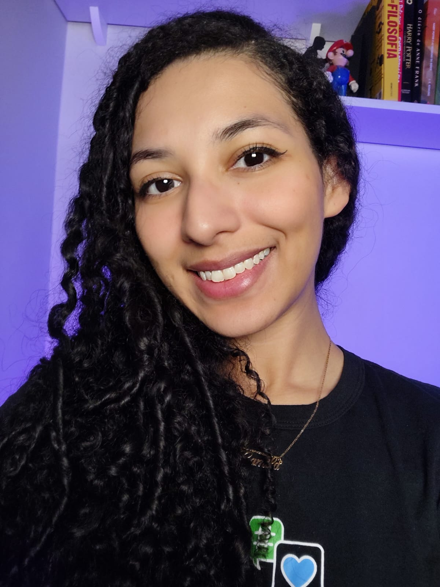

Camila Fernanda
Entusiasta em Infraestrutura e Cybersegurança | Instrutora na Alura
Gamer nas horas vagas üéÆ


Entusiasta em Infraestrutura e Cybersegurança | Instrutora na Alura
Gamer nas horas vagas üéÆ


Profissional de tecnologia, atualmente dedicada ao ensino e sempre explorando novos horizontes em Infraestrutura e Segurança. Iniciei minha carreira no campo do ensino de tecnologia, onde adquiri habilidades valiosas em comunicação, oratória e didática, juntamente com habilidades técnicas sólidas em temas como Redes, Git, Docker, Pentest, Firewalls, CI/CD e OWASP. Comecei como membro do Scuba Team de DevOps na Alura, atendendo e auxiliando estudantes. Atualmente, desempenho o papel de Instrutora de Cybersegurança na Alura, contribuindo com a criação de cursos, artigos, palestras e transmissões ao vivo.
Nos últimos anos, concentrei meus esforços no aprimoramento das minhas habilidades em ferramentas essenciais para a prática de DevSecOps. Possuo experiência prática com ferramentas como Linux, Git, Jenkins, GitLab, Docker, testes SAST e DAST, entre outras. Meu objetivo é aplicar essas ferramentas em projetos práticos e, como resultado, desenvolver conteúdo educacional relacionado a essas práticas.
Minha paixão é aprofundar cada vez mais meus estudos, aprendizados e experiências em Infraestrutura e Segurança, buscando constantemente novos patamares de conhecimento. Como profissional em constante evolução na área de tecnologia, estou sempre em busca de novas oportunidades para aprender e expandir minhas experiências. Estou aberta a projetos desafiadores e colaborativos, nos quais posso contribuir com meu conhecimento em DevSecOps.